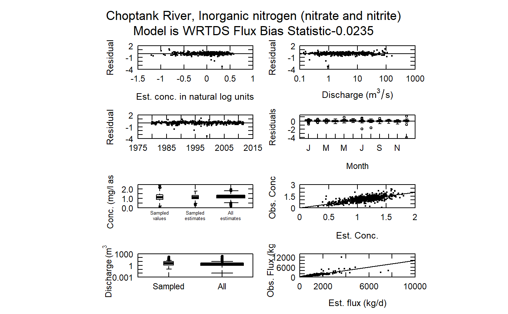

R/fluxBiasEight.R
fluxBiasMulti.RdThese plots use the jack-knife estimates from WRTDS to investigate the potential flux bias problem. It can also be used for estimates constructed by other methods (such as LOADEST) if the results are stored in a data frame organized like the Sample data frame. It allows additional label information to indicate what method is used. The use of this plot is described in Hirsch, Robert M., 2014. Large Biases in Regression-Based Constituent Flux Estimates: Causes and Diagnostic Tools. Journal of the American Water Resources Association (JAWRA) 1-24. DOI: 10.1111/jawr.12195
Although there are a lot of optional arguments to this function, most are set to a logical default.
Data come from named list, which contains a Sample dataframe with the sample data, a Daily dataframe with the daily flow data, and an INFO dataframe with metadata.
fluxBiasMulti(eList, qUnit = 2, fluxUnit = 3, moreTitle = "WRTDS", cex = 0.7, cex.axis = 1.1, cex.main = 1.1, randomCensored = FALSE, col = "black", lwd = 1, ...)
| eList | named list with at least Sample, Daily, and INFO dataframes |
|---|---|
| qUnit | object of qUnit class. |
| fluxUnit | object of fluxUnit class. |
| moreTitle | character specifying some additional information to go in figure title, typically some information about the specific estimation method used, default is no additional information |
| cex | numerical value giving the amount by which plotting symbols should be magnified |
| cex.axis | magnification to be used for axis annotation relative to the current setting of cex |
| cex.main | magnification to be used for main titles relative to the current setting of cex |
| randomCensored | logical. Show censored residuals as randomized. |
| col | color of points on plot, see ?par 'Color Specification' |
| lwd | number line width |
| … | arbitrary graphical parameters that will be passed to genericEGRETDotPlot function (see ?par for options) |
eList <- Choptank_eList fluxBiasMulti(eList)# Water year:# NOT RUN { pdf("fluxBiasMulti.pdf", height=9, width=8) fluxBiasMulti(eList) dev.off() # Graphs consisting of Jun-Aug eList <- setPA(eList,paStart=6,paLong=3) pdf("fluxBiasMultiSummer.pdf", height=9, width=8) fluxBiasMulti(eList) dev.off() # }